Carbon Capture in the News
Join us for the 2021 Sustainable Communities Web ChallengeEmbed and extend our Bioeconomy Planner and Industry Impact Evaluator
Which industries produce the most Greenhouse Gas?
How YOU can capture carbon
Brew your own, build with superwood and mass timber and grow forests really fast!
Turning Beer Byproducts into Carbon Nanotubes
Using leftover barley, scientists have created a low-cost renewable biofuel for homes in winter, charcoal for summer barbecues, active carbon for water filters and treating poison, and carbon nanotubes for cancer treatment and drug delivery.
Capturing Carbon from the Air using Carbon Nanotubes
A significantly less energy-intensive way to extract carbon from air at virtually any concentration level.
Whiskey Makers Are Making a Play For Climate-Conscious Drinkers
Distilleries are touting water conservation, forest planting, butterfly waystations and bee protection.
Creating Carbon-Neutral Jet Fuel from CO2 and Hydrogen
A cost-effective and efficient way to produce jet fuel from carbon dioxide.
Permanent storage of CO2 in US basalt formations - Like they do in Iceland.
Distribution of major basalt formations in the United States along with distribution of CO2 sources.
Harvesting Hydrogen from Tough Biomass during Paper Production
In June of 2021, the European Union agreed existing natural gas pipelines funded for conversion to hydrogen will be allowed to transport a blend of hydrogen with natural gas or biomethane until 2029. Electrolyzers must account for at least 100 MW capacity in each pipeline project.
More ways carbon is captured using alternatives to fossil fuels...
- The New Bioeconomy: Advanced biofuels from non-food biomass
- Creating Plastics and Fuels from Biomass - using Clostridia Bacteria
- Biotech Industries - Cellular and Cell-free Bioproduction Systems
- Coastal Recycling - Creating Activated Carbon filters from Lignin Waste and PET plastics
- Fast Growth Forestry - for Superwood, Nanowood and Transparent Wood
- Railroad Industry - Recycling Car Tires and Plastics into Railroad Ties
- Learn more about Sustainable Materials Management (SMM)
In Paper Production
The expanse of the global lignin market is being driven by the increasing demand for carbon fibers in the construction and automotive industries. Paper mills currently discharge million of gallons of lignin effluent into waterways daily. Lignin is an organic, often pale-yellow, connecting substance found between and in plant cells. Lignin is the second largest renewable carbon source on the planet after cellulose. Lignin Market ValuationPaper companies and universities are researching enzymes to create prebiotics that increase chicken health and immunity. The new poultry feed additive could reduce the need for anti-biotics by using xylan, the third most abundant biopolymer on Earth, which is from the group of hemicelluloses found in flowering plants, wood producing trees, and the cell walls of grasses.
Conversion of Biomass into Acrylonitrile, a Key Precursor for Carbon Fiber Manufacturing
"The catalyst used for the nitrilation chemistry is about three times less expensive than the catalyst used in the petroleum-based process and it's a simpler process. The chemistry is endothermic so it doesn't produce excess heat, and unlike the petroleum-based process, it doesn't produce the toxic byproduct hydrogen cyanide. Rather, the bio-based process only produces water and alcohol as its byproducts." Related: An Alternative To Carbon Fiber from Fossil Fuels
LignoTech Florida - Owned by Rayonier Advanced Materials (45%) and Borregaard (55%)
"The 110 million USD investment represents a production capacity of 100,000 metric tonnes lignin measured as dry substance. In a planned second phase, the capacity can later be expanded by 50,000 tonnes."

Source: Recent Advances in Applications of Acidophilic Fungi to Produce Chemicals
How to use Lignin as a Fuel Cell, with no Carbon Emission
Hydrocarbon chains are broken down to energy-rich benzenediols. The popular conducting polymer PEDOT:PSS prevents carbon dioxide from forming.
Fast Forestry
How to Grow a Forest Really, Really Fast
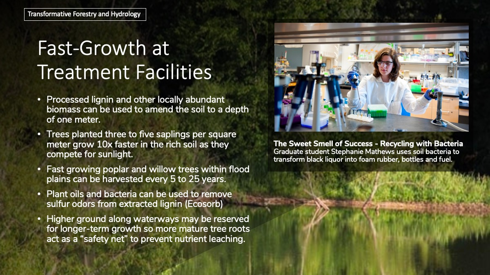 To establish a mature, native forest in ten times the normal rate of forests planted by humans, amend the soil to a depth of one meter, add a locally abundant biomass. Plant three to five saplings per square meter. "This grows into a forest so dense that after eight months, sunlight can’t reach the ground. At this point, every drop of rain that falls is conserved, and every leaf that falls is converted into humus. The more the forest grows, the more it generates nutrients for itself, accelerating further growth. This density also means that individual trees begin competing for sunlight — another reason these forests grow so fast." - TED Fellows{kind=link}
Biosolids as Fast Growth Forest Fertilizer on Marginal Soils
Adding organic matter to soil reduces surface runoff and erosion, improves the capacity to hold water and nutrients while increasing yields (UGA). Deep-row biosolid applications allows for forest products at sites near treatment plants. Deep-rooted plant material uptakes nitrogent to minimize leaching into groundwater. In Egypt, deserts are being reclaimed and eucalyptus trees are producing wood at four times the rate of pine plantations in Germany.
Application of Composted Pulp and Paper Mill Sludge to a Young Pine Plantation (2000)
"One year after application of compost, the percentage increase in stem diameter was 40 to 66% greater than that achieved in untreated plots, with better growth at the highest compost application rate."
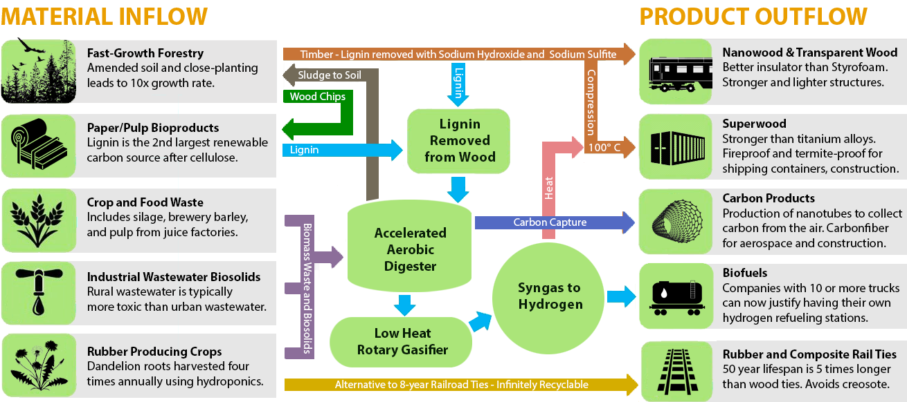
{kind=link}
Forestry and Agriculture Input - Lignin and Cellulose Processing - Railroad Industry Output
Superwood
Nanowood Insulation, Densified Superwood, Transparent Wood and Mass Timber
Low-land areas with abundant water are ideal for the fast growth of softwood used in the production of nanowood insulation, densified super wood, and transparent wood - which capture and store carbon locally in construction and manufacturing.
Nanowood - Better insulator than styrofoam
Nanowood is produced by boiling out the lignin, treating with Hydrogen Peroxide, then freeze-drying the remaining pure cellulose. As an insulator, deflected heat travels to the end of the wood fiber, where it can be released in the summer or retained in the winter.
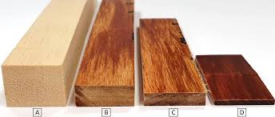
Densified Superwood - Stronger than most titanium alloys
Bullet-proof super wood is created from soft woods like pine or balsa by bonding hydrogen between cellulose molecules using hot compression after partially removing lignin. Softwood grows faster and therefore provides a quicker return on investment. The process replaces the use of slower-growing but denser woods in furniture, parts manufacturing and construction.
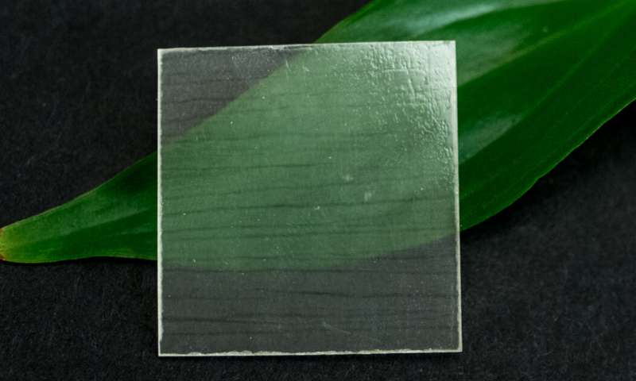
Transparent Wood - Three times better insulator than glass
Infused with polymers and sturdier than traditional wood, transparent wood can be used in place of less environmentally friendly materials, such as plastics.
As a daylight-harvesting roof, the aligned wood channels guide sunlight into building interiors without relying on the sun’s angle.
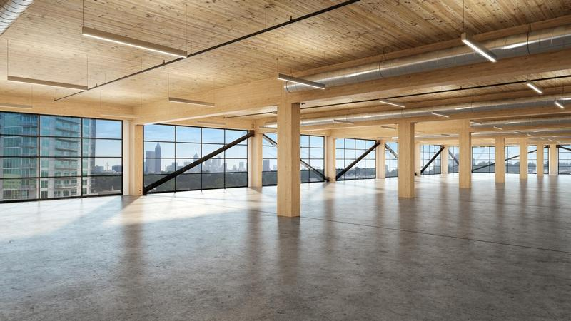
Mass Timber Construction
While steel and concrete construction release large amounts of carbon into the atmosphere during construction, wood construction traps and stores carbon for hundreds of years, after which it can be recycled or used as fuel.
In February of 2020 Macy's headquarters announced their move into Georgia's first mass timber office building - T3 West Midtown at Atlantic Station.
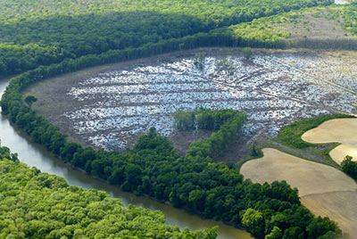
Southern U.S. Wood Pellet Market: Increasing forest acreage and carbon storage
Carbon capture varies widely based on the final use of wood pellets for fuel.
The European energy industry is using subsidies to outbid the US wood construction and biochemical industry for biomass, which includes low-value whole trees, branches and waste wood chips. Under current trade policies, as more countries export US wood pellets, their power plants may not have the same carbon capture goals as the Drax biomass energy plant in the United Kingdom.
Starting in 2022, the LanzaJet biofuel plant in Soperton, Georgia will begin producing jet fuel from wood chips and other waste material
using a process the U.S Energy Department’s Pacific Northwest National Laboratory (PNNL) developed to upgrade ethanol from plant and animal materials to alcohol-to-jet synthetic paraffinic kerosene (ATJ-SPK). "The process could help a steel mill recycle 120,000 tons of carbon a year, which would be the equivalent of removing 100,000 cars from the road."
The Celera 500L and 1000L operates on Jet A1 and biodiesel, with the future option for electric. The 6 and 12 passenger pusher-prop planes have jet-equivalent speeds of 460 miles per hour, with eight times lower fuel consumption than equivalent jets. With a flight range twice that of comparably sized craft, the Celera will be able to traverse any city pairing in the US thanks to its "laminar flow" body shape.
Providing 18 to 25 miles/gal fuel economy, compared to the 2 to 3 miles/gal for a similar-sized jet aircraft, these fast, efficient planes offer six times lower operating costs for smaller direct flights while increasing public health safety by eliminating the need for crowed airports and waiting lines.
Nanowood Insulation, Densified Superwood, Transparent Wood and Mass Timber
Low-land areas with abundant water are ideal for the fast growth of softwood used in the production of nanowood insulation, densified super wood, and transparent wood - which capture and store carbon locally in construction and manufacturing.
Nanowood - Better insulator than styrofoam
Nanowood is produced by boiling out the lignin, treating with Hydrogen Peroxide, then freeze-drying the remaining pure cellulose. As an insulator, deflected heat travels to the end of the wood fiber, where it can be released in the summer or retained in the winter.
Nanowood is produced by boiling out the lignin, treating with Hydrogen Peroxide, then freeze-drying the remaining pure cellulose. As an insulator, deflected heat travels to the end of the wood fiber, where it can be released in the summer or retained in the winter.
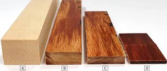
Densified Superwood - Stronger than most titanium alloys
Bullet-proof super wood is created from soft woods like pine or balsa by bonding hydrogen between cellulose molecules using hot compression after partially removing lignin. Softwood grows faster and therefore provides a quicker return on investment. The process replaces the use of slower-growing but denser woods in furniture, parts manufacturing and construction.
Bullet-proof super wood is created from soft woods like pine or balsa by bonding hydrogen between cellulose molecules using hot compression after partially removing lignin. Softwood grows faster and therefore provides a quicker return on investment. The process replaces the use of slower-growing but denser woods in furniture, parts manufacturing and construction.
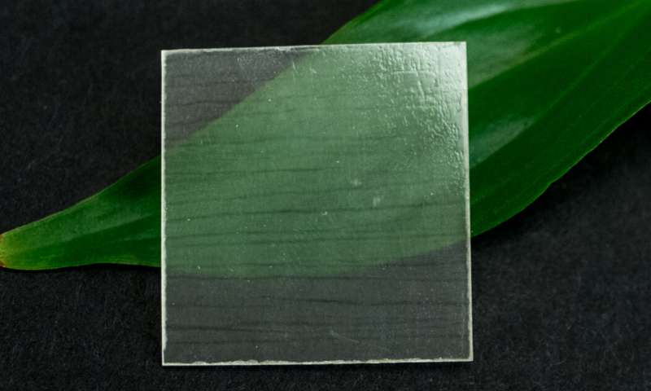
Transparent Wood - Three times better insulator than glass
Infused with polymers and sturdier than traditional wood, transparent wood can be used in place of less environmentally friendly materials, such as plastics. As a daylight-harvesting roof, the aligned wood channels guide sunlight into building interiors without relying on the sun’s angle.
Infused with polymers and sturdier than traditional wood, transparent wood can be used in place of less environmentally friendly materials, such as plastics. As a daylight-harvesting roof, the aligned wood channels guide sunlight into building interiors without relying on the sun’s angle.
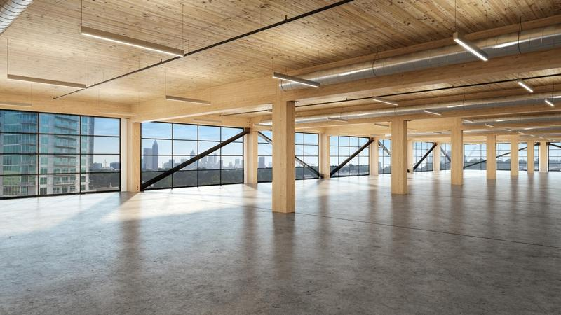
Mass Timber Construction
While steel and concrete construction release large amounts of carbon into the atmosphere during construction, wood construction traps and stores carbon for hundreds of years, after which it can be recycled or used as fuel. In February of 2020 Macy's headquarters announced their move into Georgia's first mass timber office building - T3 West Midtown at Atlantic Station.
While steel and concrete construction release large amounts of carbon into the atmosphere during construction, wood construction traps and stores carbon for hundreds of years, after which it can be recycled or used as fuel. In February of 2020 Macy's headquarters announced their move into Georgia's first mass timber office building - T3 West Midtown at Atlantic Station.
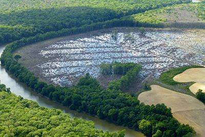
Southern U.S. Wood Pellet Market: Increasing forest acreage and carbon storage
Carbon capture varies widely based on the final use of wood pellets for fuel. The European energy industry is using subsidies to outbid the US wood construction and biochemical industry for biomass, which includes low-value whole trees, branches and waste wood chips. Under current trade policies, as more countries export US wood pellets, their power plants may not have the same carbon capture goals as the Drax biomass energy plant in the United Kingdom.
Carbon capture varies widely based on the final use of wood pellets for fuel. The European energy industry is using subsidies to outbid the US wood construction and biochemical industry for biomass, which includes low-value whole trees, branches and waste wood chips. Under current trade policies, as more countries export US wood pellets, their power plants may not have the same carbon capture goals as the Drax biomass energy plant in the United Kingdom.
Starting in 2022, the LanzaJet biofuel plant in Soperton, Georgia will begin producing jet fuel from wood chips and other waste material
using a process the U.S Energy Department’s Pacific Northwest National Laboratory (PNNL) developed to upgrade ethanol from plant and animal materials to alcohol-to-jet synthetic paraffinic kerosene (ATJ-SPK). "The process could help a steel mill recycle 120,000 tons of carbon a year, which would be the equivalent of removing 100,000 cars from the road."
The Celera 500L and 1000L operates on Jet A1 and biodiesel, with the future option for electric. The 6 and 12 passenger pusher-prop planes have jet-equivalent speeds of 460 miles per hour, with eight times lower fuel consumption than equivalent jets. With a flight range twice that of comparably sized craft, the Celera will be able to traverse any city pairing in the US thanks to its "laminar flow" body shape.
Providing 18 to 25 miles/gal fuel economy, compared to the 2 to 3 miles/gal for a similar-sized jet aircraft, these fast, efficient planes offer six times lower operating costs for smaller direct flights while increasing public health safety by eliminating the need for crowed airports and waiting lines.
Rubber and Composite Railroad Ties
Rubber and Composite Railroad TiesCreosote-coated ties are a well known carcinogen, yet they remain in wide use in the railroad industry, despite being banned for consumer use. In contrast, all-rubber railroad ties made from recycled car tire rubber last several times longer, and can be continually recycled into new railroad ties. They reduce sound and vibrations, and permanently capture carbon, unlike cement railroad ties which release carbon dioxide from limestone during production.
Jan 2021 - California is funding research on salmon-safe alternatives to zinc in rubber tires.
Hydrogen Fuel
"Right now, hydrogen is produced mainly by splitting hydrogen atoms from natural gas—an emissions-heavy process. If it were its own country, the global hydrogen industry would rank sixth in greenhouse gas emissions, according to 2017 data from energy research firm Wood Mackenzie. “It’s like the size of Germany,” says Merrian Borgeson, staff scientist at the Natural Resources Defense Council environmental group. “Just cleaning that up would be tremendously powerful.” - Bloomberg 2020-07-28Reusing gas infrastructure for hydrogen transportation
A standard pipeline can transfer up to ten times as much energy as a 380-kilovolt twin overhead power line with a rating of 1.5 gigawatts, at about one fourteenth of specific cost.
Hydrogen Hype in the Air - The unhealthy mixing of Hydrogen and Natural Gas
"H2 combustion can produce dangerously high levels of nitrogen oxide (NOx). Two European studies have found that burning hydrogen-enriched natural gas in an industrial setting can lead to NOx emissions up to six times that of methane (the most common element in natural gas mixes). Long-term exposure to NOx increases the risk of respiratory conditions and heightens sensitivity to allergens. NOx is also a precursor to the formation of fine particles and ground-level ozone, which are both associated with severe adverse health effects."
Setting health concerns aside, in June of 2021 the European Union agreed existing natural gas pipelines funded for conversion to hydrogen will be allowed to transport a blend of hydrogen with natural gas or biomethane until 2029. Electrolyzers must account for at least 100 MW capacity in each pipeline project - paving the way toward a healthier hydrogen future.
Green Hydrogen from Wastewater, Seawater, Air and Biorefinery Waste
Hydrogen takes center stage in Atlanta as fuel of the futureIn just two years, “a small band of believers has turned into a large band of implementers” - Bosch VP. Companies with 10 or more trucks can now justify having their own hydrogen refueling stations.
Why Hydrogen?
"Hydrogen produced via solar-thermal hydrolysis and transported in shipping tankers [and pipelines] could provide the ultimate environmentally sustainable model. Methane conversion coupled with carbon capture and storage (CCS) provides a necessary foundational production process which would allow the required regulatory and commercial frameworks to be developed to enable the wider deployment of hydrogen."
Harnessing Sunlight to pull Hydrogen from Wastewater
May 1, 2019 - Uses a silicon interface aided by bacteria (that generate electrical current when consuming organic matter) to split water and isolate hydrogen gas.
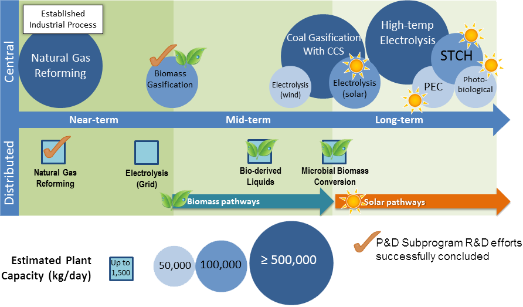
Source: US Energy Information Administration: Production of Hydrogen
New "Oxygen Evolution Reaction" Catalyst efficiently produces Hydrogen from Seawater
Nov 11, 2019 - Potential for large-scale hydrogen production and desalination using inexpensive non-noble metal nitrides avoids generating ions that settle on the catalyst and render it inactive.
Solar Panel converts Moisture in the Air into Hydrogen Fuel
March 13, 2019 - Each panel converts 250 liters of hydrogen gas per day using sunlight to split water vapor. Hydrogen is stored in underground pressure vessels to heat Belgian homes.
High Purity Hydrogen and Phenolic Resins from Biorefinery Waste
2019 Department of Energy report on Biomass Electrochemical Reactor for Upgrading to Industrial Chemicals and Hydrogen
Harvesting Hydrogen from Tough Biomass
Yulin Deng and his team at Georgia Tech have developed a low-temperature electrolytic technology that can harvest hydrogen fuel from obstinate molecules like lignin and cellulose.
Water Splitting Advance for Affordable Hydrogen
March 6, 2020 - A more viable way to store energy from solar and wind power in the form of hydrogen fuel using a nickel-iron based catalyst.
Green process converts almost any carbon source into graphene
"Graphene is the strongest known material. It is comprised of a single layer of carbon atoms arranged in a two-dimensional hexagonal lattice, in which one atom forms each vertex. A tiny amount of graphene can significantly enhance the properties of materials such as plastics, paints, composites, wood composites, concrete, metals, and lubricant. However, it is expensive to manufacture."
Producing hydrogen and graphite from wastewater - Austrailian Demo Project
Uses an unprocessed iron ore catalyst to process biomethane in waste biogas.
Share your ideas on ways communities can use innovative new technologies to capture carbon and turn waste streams into revenue streams.